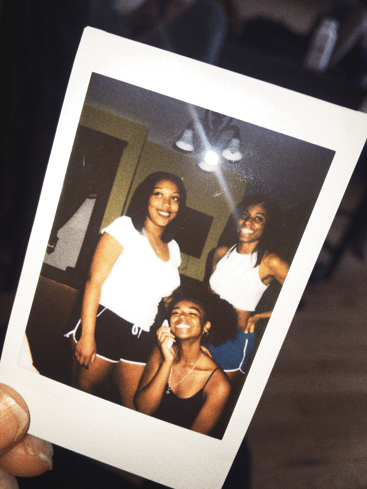
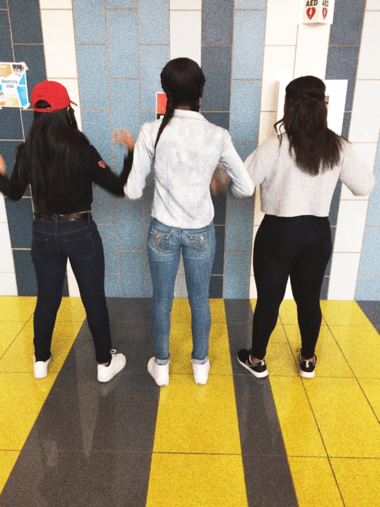
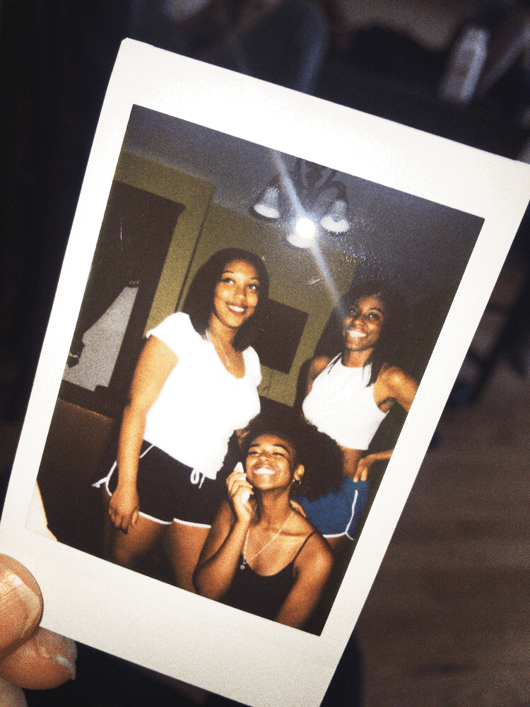
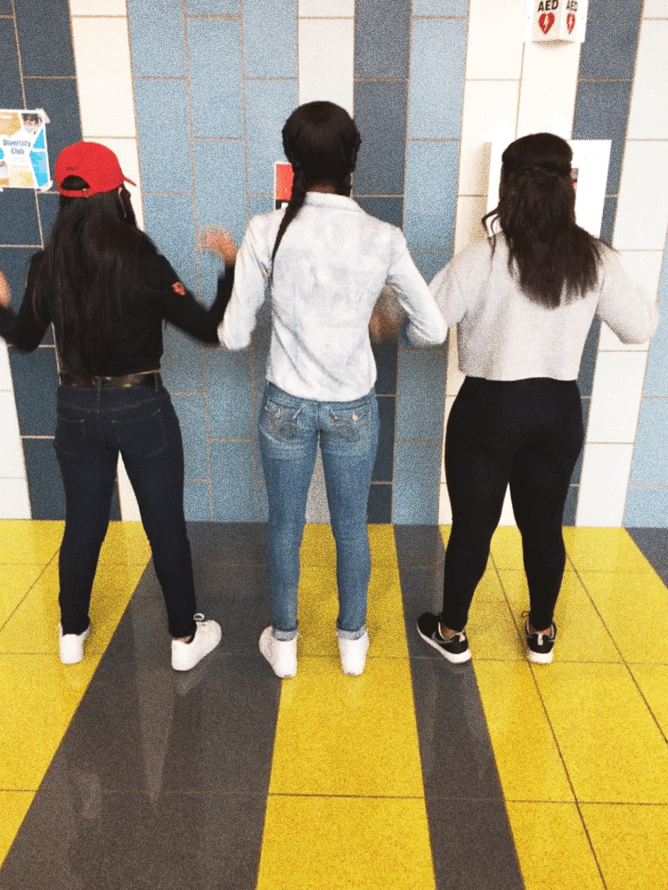

Latasha is what you would call a social butterfly. She enjoys hanging out with friends and meeting new people. She is very outgoing and doesn't have a problem speaking her mind. She has an extroverted personality with a zodiac sign of an Aquarius. Outside of her busy scheduling of school and extra curriculums, she enjoys relaxing and reading for pleasure. Latasha is a very intelligient young lady who also is very hard-working, dedicated,and driven.